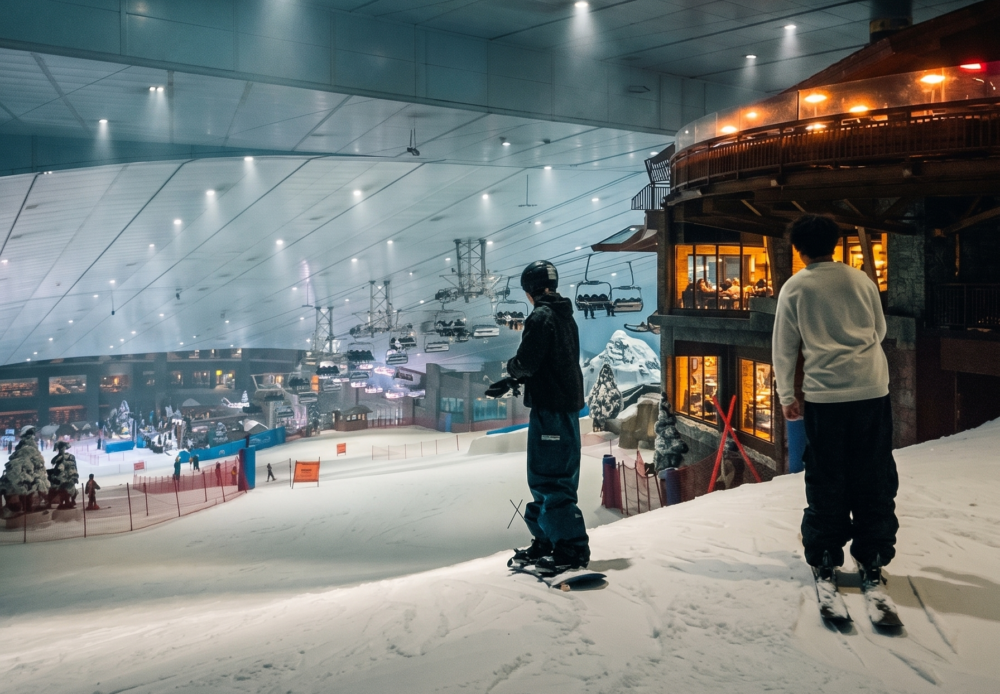

Outdoor
Step outside the indoor slopes and breathe in the crisp air at our sprawling Outdoor Alpine Plaza.
Designed to perfectly complement our indoor winter wonderland, the SNOVA Outdoor Facility is a breathtaking open-air space where adventure meets relaxation. Whether you are looking to keep the andrenalin pumping or simply want to unwind under the stars after a long day of shredding powder, our outdoor grounds have somthing for everyone.

Ideal for:
- Magical Scenery
- Fresh Alpine Air
- Family Friendly
- Cozy Relaxation
- More ways to play

Ideal Foe:
- Weather-proof riding
- Year-Round Winter
- Focused Progression
- Safety
- Optimal Comfort
Indoor
Step off the city streets and straight into winter at our premium indoor facility. Maintained at a crisp, constant sub-zero temperature year-round, the climate controlled arena garuntees perfect snow conditions whether it is the middle of summer or the dead of winter.
The centerpiece of the facility is a meticulousle maintained 60 meter long, 30 meter wide slope, featuring a comfortable 10 to 14 degree incline that is perfect for honing your technique. It delivers a highly concentrated, authentic mountain experience right in the heart of Yokohama.